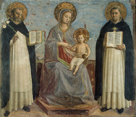
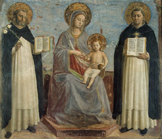

|  |
|---|
Textum a Th. Kaeppeli et A. Dondaine Romae 1941 editum
recognovit Enrique Alarcón et instruxit


|  |
|---|


[92079] Cap. Urbeveteri 1261, n. 1 Cum ordo noster per sapientiam et conversationem laudabilem incrementum receperit et vigorem, volumus et monemus quod fratres nostri, tam priores quam alii, sapientie et studiis frequentius intendant, et caveant ab omni familiaritate et notabili visitatione mulierum; et visitatores quos invenerint circa hoc notabiles, durius corrigant et emendent, et nihilominus priori provinciali studeant nuntiare.
[92080] Cap. Urbeveteri 1261, n. 2 Item monemus ut priores et eorum vicarii circa infirmos curam habeant diligentem, et fratres ad serviendum infirmis difficiles se non reddant.
[92081] Cap. Urbeveteri 1261, n. 3 Item monemus et volumus quod fratres, nisi pro magnis causis et piis et arduis, non frequentent curias potestatum.
[92082] Cap. Urbeveteri 1261, n. 4 Item monemus quod fratres extra terminos suorum conventuum non mittantur ad predicandum, nec questum aliquem faciendum.
[92083] Cap. Urbeveteri 1261, n. 5 Item inhibemus omnibus fratribus conversis quod pater noster de ambra vel de corallo non portent; et qui portare presumpserint, per priores priventur eisdem.
[92084] Cap. Urbeveteri 1261, n. 6 Item monemus quod ordinationes quas prior provincialis per provinciam misit, diligentius observentur; et tam littere magistri hoc anno misse, quam dicte ordinationes singulis duobus mensibus legantur fratribus in communi.
[92085] Cap. Urbeveteri 1261, n. 7 Item, ut diffinitores capituli provincialis se valeant citius expedire, monemus ut priorum socii petitiones et proclamationes et alias litteras diligentius superscribant.
[92086] Cap. Urbeveteri 1261, n. 8 Capitulum provinciale sequens ponimus Perusii in octavis apostolorum Petri et Pauli.
[92087] Cap. Urbeveteri 1261, n. 9 Socius prioris provincialis ad capitulum generale fr. Ildibrandinus prior Lucanus.